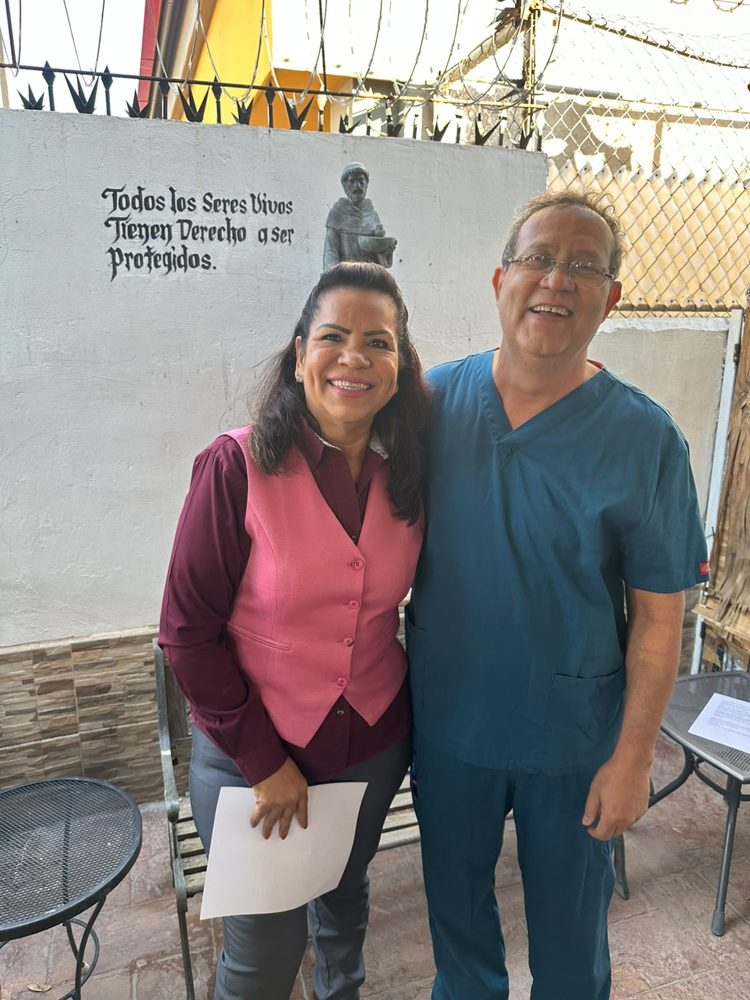

Eva Rodríguez con el médico veterinario José Rafael [APELLIDO] durante su recorrido.
Eva Rodríguez, aspirante a la Coordinación Municipal de los Comités de Defensa de la Transformación en Mexicali, se reunió con médicos veterinarios de la ciudad para retomar la colaboración que inició con el gremio en materia de control animal y salud pública. Los encuentros se dieron durante sus recorridos casa por casa, en la clínica del doctor Quezada, presidente del Consejo Veterinario de Salud Pública, y en el consultorio del médico veterinario José Rafael [APELLIDO].
Ambos especialistas recordaron que en 2008 Eva Rodríguez convocó a los colegios de médicos veterinarios y a la sociedad civil para elaborar el reglamento municipal de control animal y el Programa de Regulación y Control Animal (PIRCA). Ella recordó que de ese trabajo salió también el equipamiento del centro de control animal, con vehículos, personal y crematorio, y en 2009 un cuadernillo para colorear con el que se enseñaba en jardines de niños que una mascota es parte de la familia. «Ha sido uno de los reglamentos que más me ha gustado», dijo el doctor Quezada.
Los médicos coincidieron en que el control animal es un tema de salud pública que pide trabajar en conjunto a la medicina humana, la medicina veterinaria y la salud ambiental, el enfoque conocido como «una sola salud». El doctor Quezada explicó que descansa en tres pilares: el registro de mascotas, la información a la población sobre su cuidado y la esterilización.
«Yo soy alguien que está a favor de los animales. A mí me gustan mucho los animales, pero protegidos», afirmó Eva Rodríguez, quien subrayó que las mascotas son animales de compañía que deben cuidarse y resguardarse en casa.
José Rafael la describió como «una mujer de trabajo, una mujer que sabe trabajar con respeto» y aseguró que el gremio veterinario está «gustoso de colaborar». Eva Rodríguez propuso volver a reunir a los médicos veterinarios para buscar soluciones conjuntas: «Traigo toda la intención de volver a hacer ese tipo de reuniones que iniciamos en el 2008, donde surgieron muy buenas ideas».
Eva Rodríguez, ex diputada de la XXIII Legislatura de Baja California, inició su trayectoria en la organización de los oferentes de mercados sobre ruedas y en la colonia Hidalgo, y desde 2008 ha trabajado con el gremio veterinario en temas de control animal.
Al despedirse, concluyó: «Cuando hay confianza, transformamos juntos».